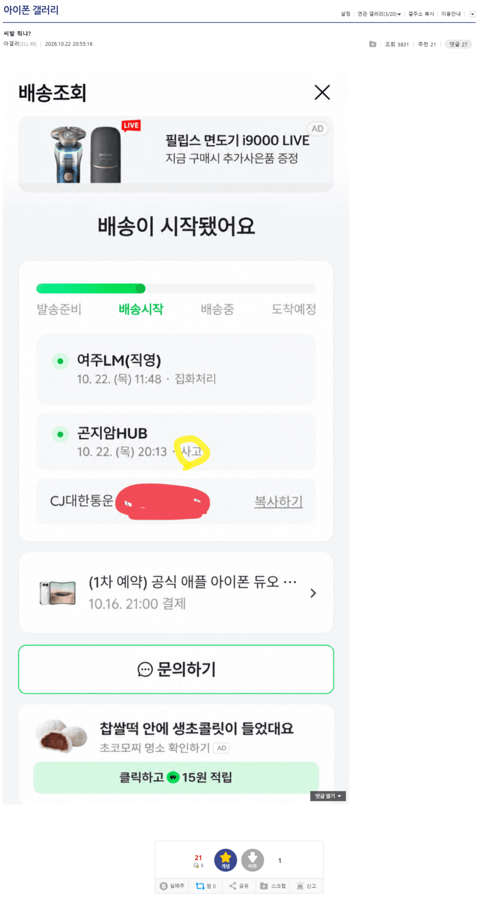
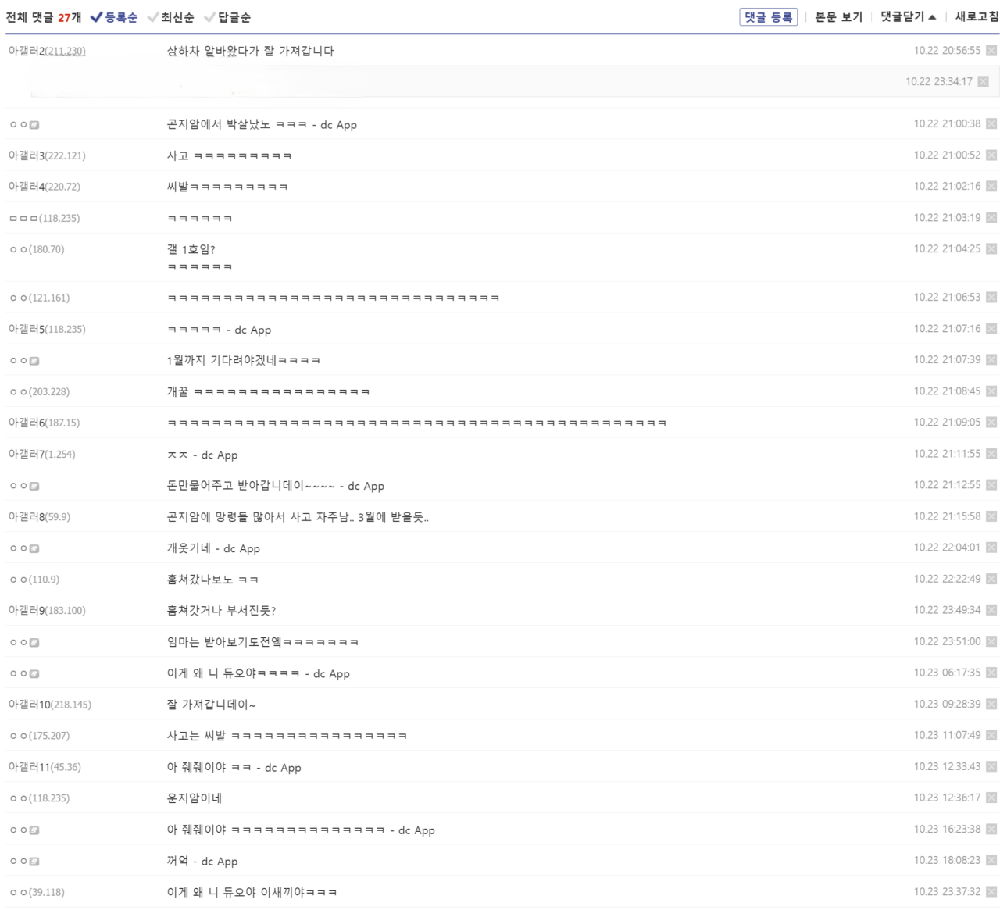

예구인데 배송사고 뭐냐 ㅋㅋ
근데 저거 당해본 사람 있음?? 저러면 보상 어케받음?


예구인데 배송사고 뭐냐 ㅋㅋ
근데 저거 당해본 사람 있음?? 저러면 보상 어케받음?
긴빠이 당했네
일단 사고 배송하는 게 맞지
ㅋㅋㅋㅋㅋㅋ 하늘이 주신 기회네 취소각
배송중 문제라 판매처에서 확인되면 제품다시 보내줄듯
제품이 없자누 ㅋㅋ 1월로 밀렸든뎅 ㅋㅋ
아? 그래??? 휴대폰은 몰랐음
그게 왜 니꺼야
저게 해병식 빌려쓰기인가
사고팔고
사고 ㄷㄷ
예전에 친구가 인터넷으로 명품지갑샀는데 박스까보니 물먹은 휴지 나왔음ㅋㅋㅋ공홈에서 산거라 공식이 그랬을리는 없고, 상하차하는 새끼들이 박스까서 훔쳐가고 대신 쳐박아뒀던거지
아 줴줴이야
쿠팡 상하차 검사 빡세게 하는데도 있지만 ㅈㄴ 널널한데도 있더라
판매자가 고객에게 보상처리->판매자는 택배사에 사고처리요청->고가보험 들었으면 보상한도 내에서 보상->안들었으면 50만원 한도내 보상
???ㅋㅋㅋㅋㅋㅋㅋㅋㅋ
아이폰첫출시때마다 저렇게 사고뜨는거 같은데 나도 사고뜬적있는데 걍 얼마 더주고 다시배송잡아줌 14때라 좀다르긴 한데 생각보다 빨리 재배송했었음 ㅋㅋㅋ
퍼가요~♡
나도 예전에 저런적있었는데 구매가격만큼 배상해줬음